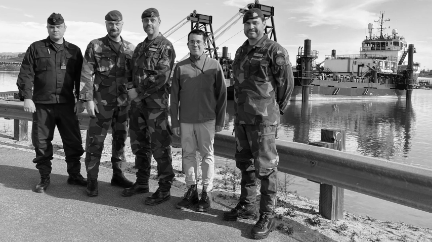
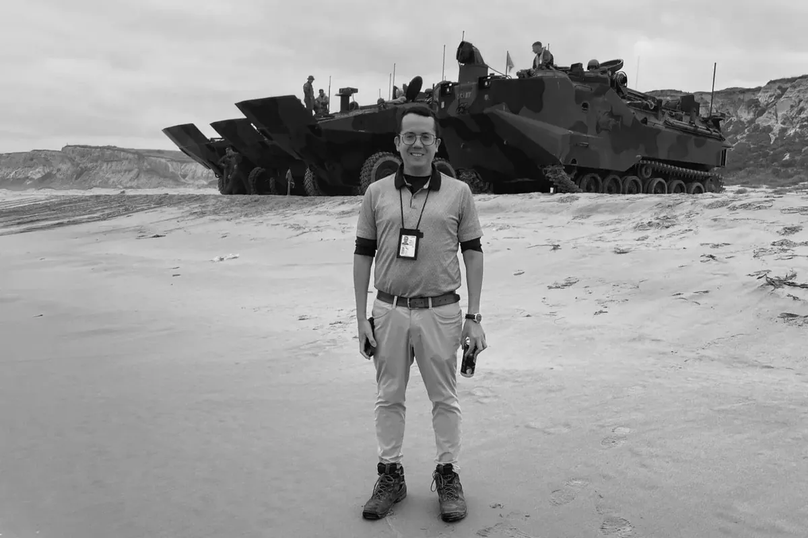
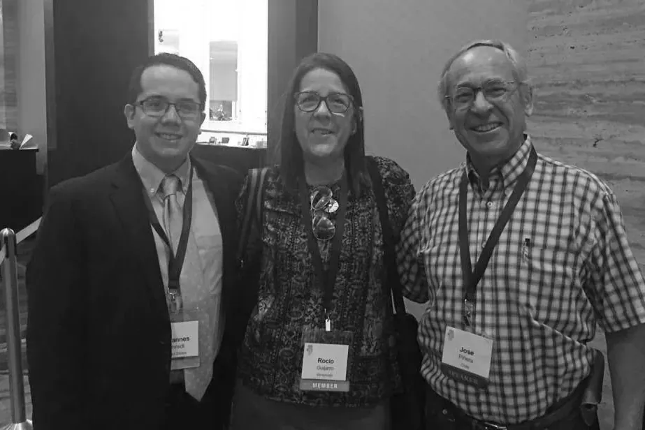

About Johannes K. Schmidt

I’m a defense acquisition professional living in Washington, D.C., with previous experience working at public relations firms and free-market think tanks at home and in Latin America.
Outside of work, I write about acquisition, military innovation, geopolitics, and the historical roots of liberty in the Americas. My writing has appeared in outlets including Forbes, Fox News, The Hill, Seapower Magazine, and U.S. Naval Institute Proceedings.
I hold a B.A. in International Affairs from the George Washington University and an M.A. in History from Georgetown.
I was born in Guayaquil, Ecuador, and have called the D.C. area home since 1992.

